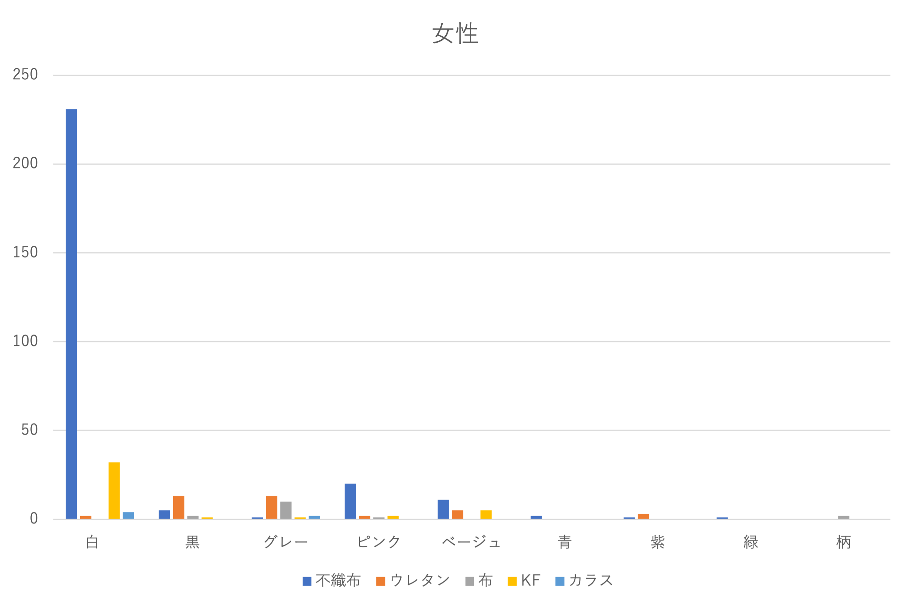
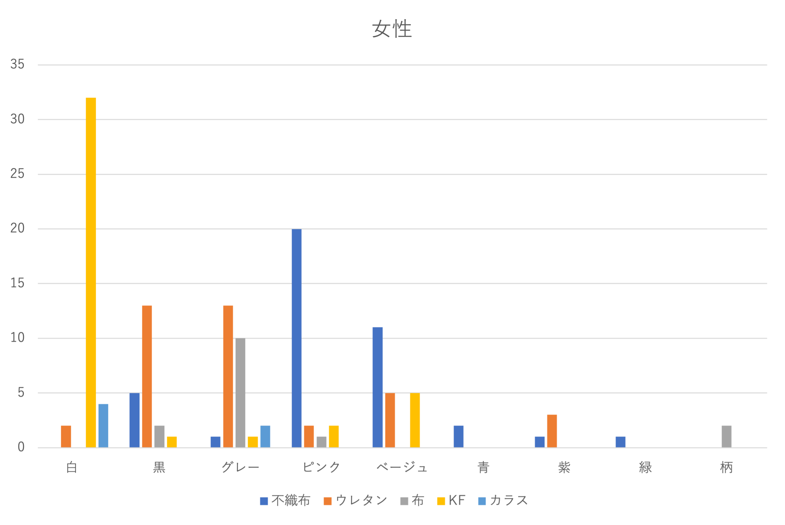
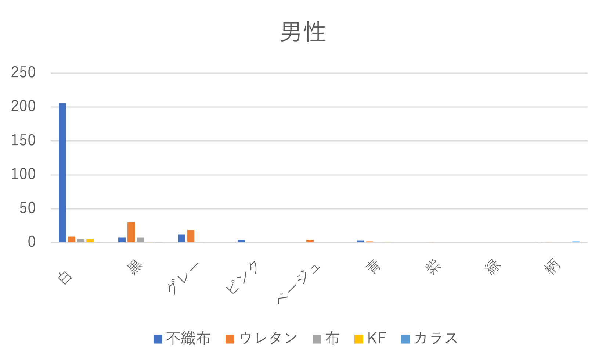
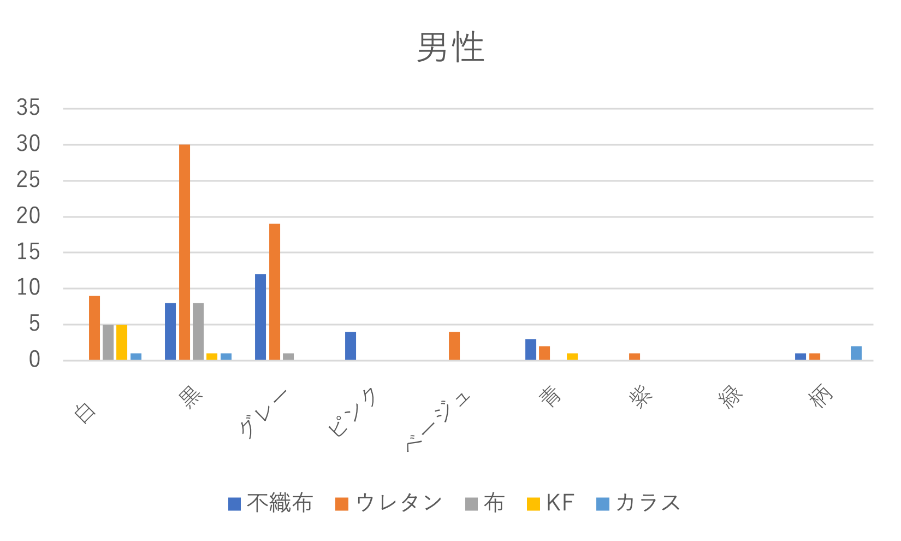

フィールドワーク
調査内容
- 調べる対象→マスク
- 調べる内容→種類、色、形、性別
- 場所→大学の出入り口
調査結果
女性調査人数：３７３人


※右の図は不織布が多くて左の図では見づらいため不織布以外のもののグラフである。
男性調査人数：３３１人


顎マスク：３ なし：２
※右の図は不織布が多くて左の図では見づらいため不織布以外のもののグラフである。
この調査を通して
調査を行う前に想像していた通り不織布マスクを使用しているひとが一番多かった。
それに加え、マスクにも流行りがあることを理解できた。韓国で使われているKFマスクが女性を中心に不織布の次に多く使われていた。
高校生の時にはピッタマスクを多くの人が使っていたので流行りなども影響してくることが理解できた。
また、チャラチャラしている人は顎マスクをしていた。
また、調査していて気づいたが女性の方は２人から５人のグループで行き来している人が多く男性の人は個人個人で来ている人が多いという違いがあった。